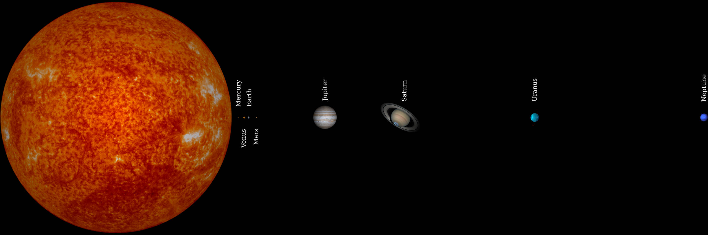

Distances in Astronomy
SCIE, 深圳 (Shēnzhèn), 6 September 2023
Gregory M. Green
(Max Planck Institute for Astronomy, Heidelberg, Germany)

Interstellar Dust in the Milky Way (银河系尘埃)
Distances
“The Sun is 150 million kilometers from Earth.”
“The Andromeda galaxy (‰ªô•≥ÊòüÁ≥ª) is 2.5 million light-years (ÂÖâÂπ¥) from Earth.”
How do we know how far away anything is?
The farthest human-made probe (Voyager 1): 0.002 light-years from Earth.
Only 0.0000001% of the way to Andromeda!
Size of the Earth
Eratosthenes Measures the Earth (~240 BC)
Eratosthenes Measures the Earth
Calculate Earth's circumference: $$ C = \frac{2\pi}{\gamma} \Delta G $$
Eratosthenes' measurements:
- $\Delta G = 5000\,\mathrm{stadia}$
- $\gamma = 2\pi / 50$
⇒ Circumference = 250,000 stadia
How accurate was Eratosthenes' measurement?
Maybe better than 1%, but we don't know how long a stadion was!
How to measure distances on Earth accurately?
Measuring distances with Trigonometry (三角学)
Law of Sines (正弦定理):
$$ \require{color} {\color{red} \frac{\sin{\alpha}}{a}} = {\color{green} \frac{\sin{\beta}}{b}} = {\color{blue} \frac{\sin{\gamma}}{c}} $$
- Measure one side ($a$).
- Measure the angles ($\alpha$, $\beta$, $\gamma$).
- Calculate the other sides ($b$, $c$).
Size of the Solar System (太阳系)
Kepler and the Solar System (太阳系)

(courtesy of Wikimedia / Datumizer)
Kepler and the Solar System (太阳系)
(image credit: Wikimedia / Dave Jarvis)
Relative distances of planets determined. Venus is 72% as far from the Sun as Earth is.
Absolute distances undetermined. How many kilometers is Venus from the Sun?
Earth-Sun Distance: The Transit of Venus (金星掠日)
(courtesy of NASA / Solar Dynamics Observatory)
Earth-Sun Distance: The Transit of Venus
(courtesy of Wikimedia / Vermeer, Duckysmokton, Ilia)
Earth-Sun Distance: The Transit of Venus
(courtesy of NASA / Solar Dynamics Observatory)
Earth-Sun Distance: The Transit of Venus

(map from Wikimedia / AlexiusHoratius)
Earth-Sun Distance
1 Astronomical Unit (AU, 天文单位) ≃ 149,597,871 kilometers
Distances to the Stars

Distances to Stars: Stellar Parallax (恒星视差)

(image credit: Wikimedia / Srain)
1 parsec (pc, 秒差距) ≃ 206264 AU
≃ 3.086×1013 km
≃ 3.26 light years
Astronomers like to use parsecs.
First published parallax measurement (1838)
61 Cygni: 0.314 arcsec
$$ \mathrm{distance} = \frac{1\,\mathrm{parsec}}{\mathrm{parallax} / \mathrm{arcsec}} = 3.2\,\mathrm{parsec} $$
(correct value: 0.286 arcsec, 3.5 parsec)
Gaia
Gaia
Accuracy over time

Gaia's range

What if parallax is too small to measure?

Using our knowledge of the distances to stars, we can learn about their properties.
Herzsprung-Russell Diagram: stellar temperature (温度) vs. luminosity (光度)
Types of stars: main-sequence stars, giants, white dwarfs, ...
Cepheid Variable Stars (Âèò‰∫ÆÊòü): ùú∑ Doradus
Period-Luminosity Relation (周期亮度比例)

Brighter stars have longer periods.
⇒ Can measure distance from period and apparent brightness of Cepheid.
Discovered by Henrietta Leavitt in 1912:

“Standard Candle” (ʆáÂáÜÁÉõÂÖâ)
$$ \mathrm{apparent\ brightness} = \frac{\mathrm{luminosity}}{\mathrm{distance}^2} $$
$$ \implies \mathrm{distance} = \sqrt{\frac{\mathrm{luminosity}}{\mathrm{apparent\ brightness}}} $$
“Standard Candle” (ʆáÂáÜÁÉõÂÖâ)
$$ \mathrm{apparent\ brightness} = \frac{\mathrm{luminosity}}{\mathrm{distance}^2} $$
$$ \implies \mathrm{distance} = \sqrt{\frac{\mathrm{luminosity}}{\mathrm{apparent\ brightness}}} $$
“The Great Debate” — How large is the Universe?

(image credit: 1. Petr Novák, 2. NASA/JPL-Caltech, 3. Adam Block, 4. ESA & NASA, 5. NASA/ESA and The Hubble Heritage Team, STScI/AURA)
(image credit: NASA, ESA, Z. Levay (STScI), the Hubble Heritage Team (STScI/AURA))
Cepheid in Andromeda
Discovered by Edwin Hubble in 1923.
The Local Group
Distance ladder
Measure short distance.
Use that to measure larger distance.
Use that to measure larger distance.
...
Earth
Solar System
Stars / Milky Way
Galaxies
Mapping Dust in 3D in the Milky Way (银河系尘埃3D结构)
Zooming in on Dust Cloud in Milky Way (拉近银河系尘埃云)
Dust grains (尘埃)


{kind=link}
{kind=link}
{kind=link}
.svg){kind=link}
{kind=link}
{kind=link}
{kind=link}
{kind=link}
{kind=link}
{kind=link}
{kind=link}
{kind=link}
{kind=link}
{kind=link}
{kind=link}
(dust grain image credit: D. Brownlee & E. Jessberger)
Mapping dust along one sightline (视线)

Mapping dust along one sightline (视线)

Mapping dust along one sightline (视线)

Mapping dust along one sightline (视线)

Mapping dust along one sightline (视线)

Mapping dust along one sightline (视线)

Mapping dust along one sightline (视线)

Mapping dust along one sightline (视线)

Mapping dust along one sightline (视线)

Mapping dust along one sightline (视线)